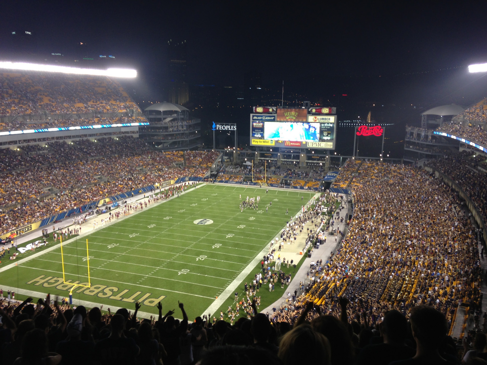
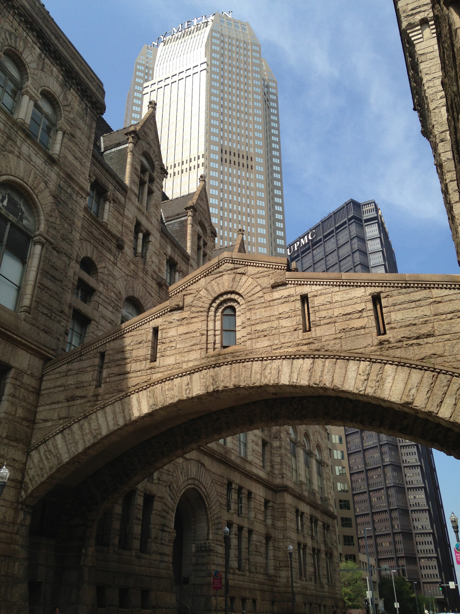
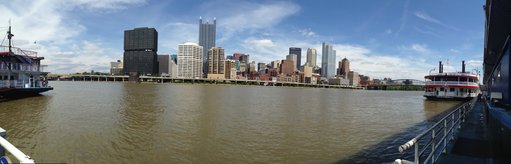
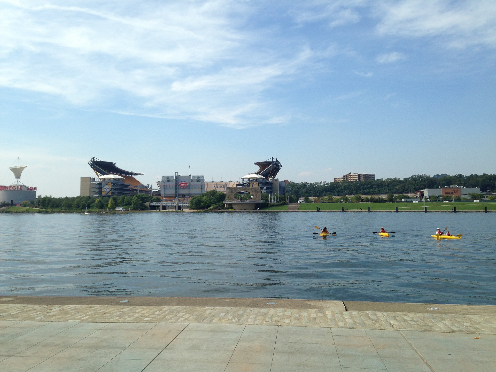
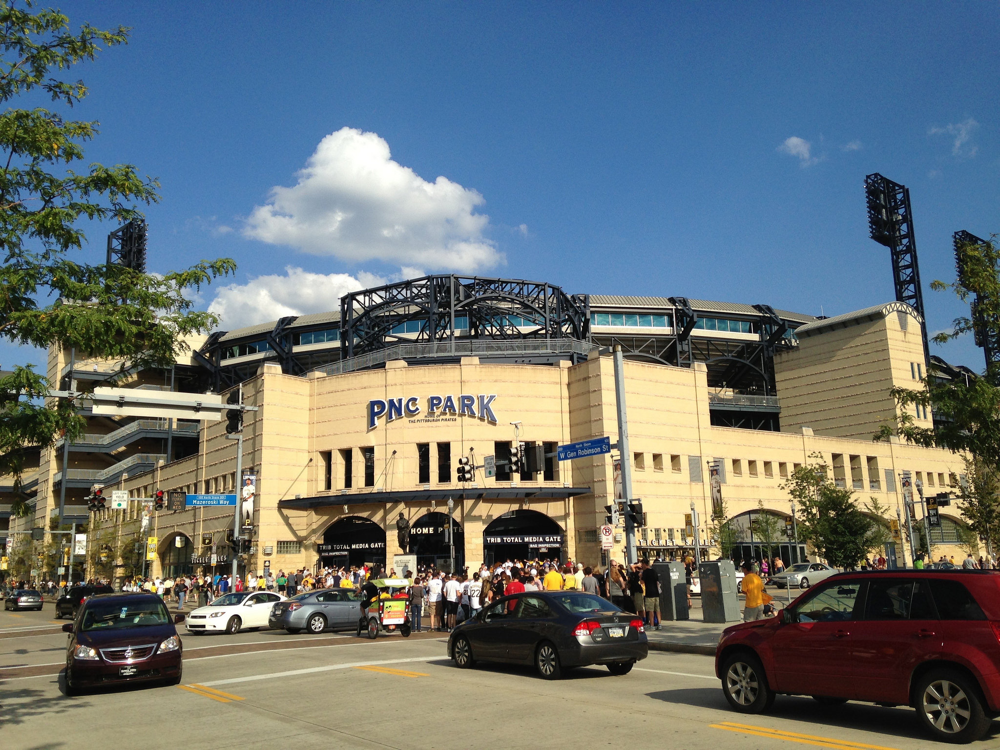
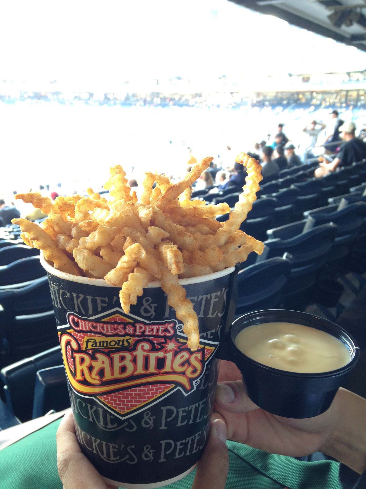

(圖片說明：PNC Park曾被選為全MLB最漂亮的球場，可以從球場看到downtown的skyline)
匹茲堡（Pittsburgh）位於美國賓夕法尼亞州西南部，奧里格納河與蒙隆梅海拉河匯合成俄亥俄河的河口。賓夕法尼亞州第二大城市，阿利根尼縣縣治。2000年人口統計334,563（七縣大都區人口2,462,571）。
匹茲堡曾是美國著名的鋼鐵工業城市，有「世界鋼都」之稱。但1980年代後，隨中國鋼鐵產量上升，匹茲堡的鋼鐵業務已經淡出，現已轉型為以醫療、金融及高科技工業為主之都市。市內最大企業為匹茲堡大學醫學中心，並為全美第六大銀行匹茲堡國家銀行所在地。 由於近年的經濟發展堪為典範，於2009年獲選主辦世界二十國集團（G-20）高峰會[8]。匹茲堡交通便利，公路、鐵路和水上運輸發達，匹茲堡國際機場位於該市西部，為美國東部著名的大型機場，有18家航空公司聚集此地。匹茲堡大學和卡內基梅隆大學是美國著名的高等學府。
匹茲堡海盜（Pittsburgh Pirates）是一支位於賓夕法尼亞州匹茲堡市的美國職棒大聯盟球隊，隸屬於國家聯盟中區。隊史總計參與了7次世界大賽，並獲得5座世界大賽冠軍。
海盜在創立第6年的1887年，即從美國協會加入國家聯盟。
1901年獲得了隊史首座國聯冠軍，並且參加在1903年舉行的第一次世界大賽。
1909年，海盜奪下隊史首座世界大賽冠軍。
海盜的世界大賽隊史裡面，經歷過許多的精彩高潮和沉浮，例如在1960年世界大賽的第7場比賽，由馬澤洛斯基（Bill Mazeroski）於9局下擊出再見全壘打，幫助海盜以4:3打敗紐約洋基，獲得世界大賽冠軍。
自1990年代後，海盜戰績變糟，一度創造連續20年勝率不到五成，成為北美洲職業運動史記錄。
2013年，海盜在主場PNC Park的外卡殊死戰中以6:2擊敗紅人重返季後賽，才使這不名譽的紀錄被洗刷掉。
PNC球場，座落在美國賓州匹茲堡的球場，為美國棒球大聯盟匹茲堡海盜隊的主場，於西元2001年啟用，並由當地的PNC財團取得命名權。
| 基本資料 | |
|---|---|
| 位置 | 115 Federal St. Pittsburgh, Pennsylvania 15212 |
| 業主 | City of Pittsburgh Sports & Exhibition Authority |
| 草坪表層 | 天然草皮 |
| 容納人數 | 38,496 |
| 草坪面積 | 左外野 — 325 英呎 (牆高 6 英呎) |
| 左中外野 — 386 英呎 | |
| 左中外野最深處 — 410 英呎 | |
| 中外野 — 399 英呎 (牆高 10 英呎) | |
| 右中外野 — 375 英呎 | |
| 右外野 — 320 英呎 (牆高 21 英呎) | |
| 動工 | 1999年4月7日 |
| 啟用 | 2001年3月31日 |
| 建築費 | 2億1600萬美金 |
| 建築師 | HOK Sport; L.D. Astorino & Associates (Pittsburgh) |
從匹茲堡大學坐 bus 71ABCD或從CMU坐61ABCD到6th and Wood下車跟著人潮走過橋或是再轉免費的輕軌都可以，只是輕軌非常慢。
回程不用太擔心治安，散場人很多，跟著人群走到5th and Wood就可以坐公車回Oakland了。
PNC Park是個小而美的球場，座落在Allegheny River的北岸， 附近有鋼人隊跟Pitt Panthers的主場Heinz Field卡內基科學博物館、安迪沃荷美術館跟一間賭場。
看球前有時間可以先去downtown晃晃，有一些歷史建築也可以感受一下downtown的氣氛
可以去參加遊河的觀光行程，會有專人介紹河岸風光
也可以去划獨木舟或是沿著河岸散散步
第一次去的話建議早點到球場，沿外面繞個一圈，再去裡面看賽前練習
吃的我只吃過薯條跟nachos還有一次莫名其妙找到的一元熱狗

不過漢堡名店BRGR在球場裡也有攤位，可以買來嚐嚐。
要注意進球場要安檢，不要帶太大的包包。
匹茲堡球迷加油會喊Let’s go Bucs!電子螢幕也會要觀眾make some noise， 喊charge跟7局的take me out to the ballgame也是基本配備，
比較有趣的是球迷會揮舞海賊旗跟計分表還有開場影片是神鬼奇航風（去年好像換了）。
然後盡量挑有event的時候去，大部分是週末，會送T-shirt或bobblehead， 然後要注意有些event禮送14歲以下的小朋友...